type: abctje
puzzle:
numbers: 1-6
clues:
- BEISPIEL: 24
- LIBELLE: 25
- EIS: 8
solution:
- 1: E
- 2: I
- 3: B
- 4: P
- 5: S
- 6: L

type: angleloop
puzzle: |
..3..3
4.....
..4.5.
.5.3..
...5..
..3..3
solution: |
..a..d
j.....
..b.c.
.i.h..
...f..
..g..e

type: anglers
puzzle: |2
----
-....4
7.**.-
-...*-
-....-
--3-
solution: |2
. . . .
. . o-o-o-4
|
7-o * * . .
| |
. o o-o * .
| | |
. o-o o-o .
|
. . 3 .
code:
cell_rows_bottom: [1,2]
type: baca
puzzle:
grid: |
A..B.
.A..B
..B..
C..C.
.A..C
outside:
left: [[], [], [1,1], [], []]
top: [[], [1,1], [], [], [2]]
right: ---C-
bottom: -AC--
solution: |
ABXXC
CXAXB
XCXBA
XABCX
BXCAX
code:
cell_rows_bottom: [1,3]
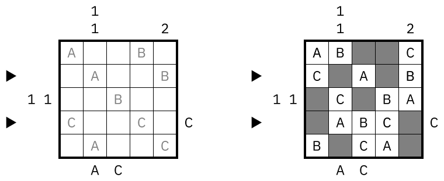
type: bahnhof
source: http://wiki.logic-masters.de/index.php?title=Bahnhöfe/de
puzzle: |
........
.1..+...
........
......3.
..+2.4..
........
solution: |
o-o o-o o-o-o-o
|.|.|.|.|. . .|
o o o o-o-o-o o
|.|.|. .|. .|.|
o o o-o o-o o o
|.|. .|. .|.|.|
o o-o o-o o o o
|. .|. .|.|.|.|
o o-o-o-o o o o
|.|.|. . .|.|.|
o-o o-o-o-o o-o

type: blackout-dominos
puzzle:
digits: 1-4
grid: |2
4
....
.3
......
..2. .
1...
solution:
values: |2
4
3332
33
444X11
4X22 1
1122
dominos: |2
a
abcc
bd
eefXdg
hXfi g
hjji
code:
cell_rows_bottom: [1,2]
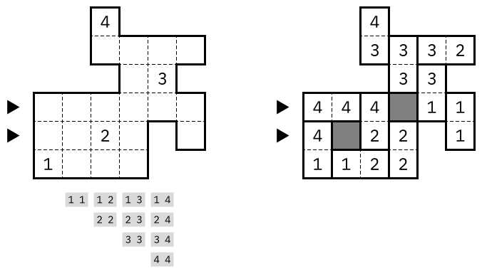
type: buchstabensalat
puzzle:
letters: A-C
top: ..A.A
left: CCC.B
bottom: ..B..
right: .AA..
solution: |
CBA..
..CBA
.CBA.
A..CB
BA..C
code:
cell_rows_bottom: [1,3]

type: cave
puzzle: |
9....
....2
..5..
5....
....5
solution: |
-----
---X-
---XX
-XXXX
-----

type: cave
puzzle:
grid: |
b....
....2
..5..
a....
....5
replace:
a: 5
b: 9
solution: |
-----
---X-
---XX
-XXXX
-----
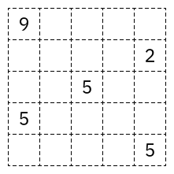
type: fillomino-checkered
puzzle: |
31..
....
....
..24
solution: |
3122
3344
4424
4424
code:
cell_rows_bottom: [1,2]
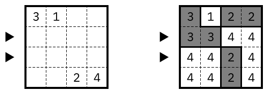
type: color-akari
puzzle: |
Y...Y...C
..M...C..
...Y.M...
M........
.R.....G.
........X
...C.Y...
..Y...C..
B...M...M
solution: |
...G..G..
R....B..B
..R.R.B..
.....R...
.........
...G.....
B.......R
.R...G.G.
...B..B..
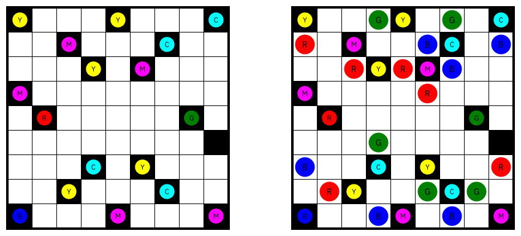
type: compass
puzzle:
grid: |
.....
.a.b.
.....
.c.d.
.....
clues:
a: 2 1 . 2
b: . 4 2 .
c: . 3 4 .
d: . . 1 .
solution: |
aabbb
aaabb
ccccb
cdccb
cdddd

type: coral
source: http://wiki.logic-masters.de/index.php?title=Koralle
puzzle:
left: [[1,2],[1,2],[1,2],[4],[1,1]]
top: [[1,1],[4],[2],[3],[2,2]]
solution: |
XX..X
.X.XX
XX.X.
.XXXX
..X.X
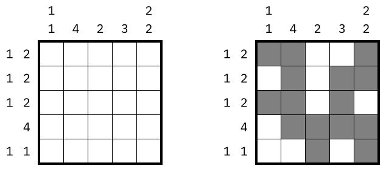
type: country-road
puzzle:
rooms: |
abbbb
ccddd
cceed
fffgg
fffgg
clues: |
.3...
3....
.....
...2.
.....
solution: |
o-o-o-o
|. . .|
o-o o o-o
.|. . .|
o o o-o o
.|.|.|.|
o-o o o-o
|. .|. .
o-o-o
code:
cell_rows_bottom: [2,3]
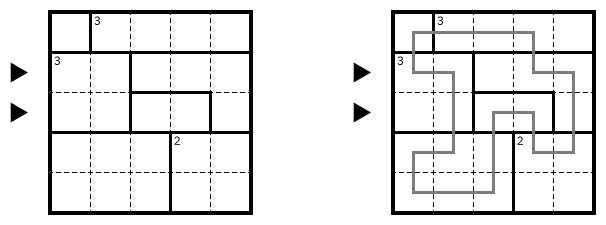
type: curvedata
puzzle:
grid: |
....
..a.
.b..
....
clues:
a: |
o-o o
| |
o-o
b: |
o-o-o
|
o-o o
| |
o-o-o
solution: |
o-o-o o
| |
o-o o-o
|
o o-o-o
| |
o-o-o-o

type: dominos
puzzle:
digits: 1-3
grid: |
1221
3231
3213
solution: |
aabc
debc
deff
type: domino-pillen
author: silke
puzzle:
digits: 1-3
pills: 4-6
grid: |
3321133
3221122
1111132
solution: |
aabCCCd
efbGGGd
efhhIII
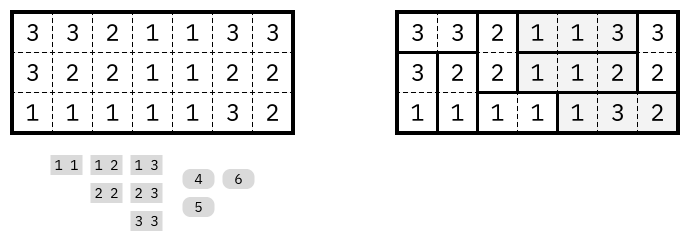
type: doppelblock
puzzle:
top: [-,6,-,3,4]
left: [-,1,0,-,-]
solution: |
3X21X
X1X23
23XX1
X213X
1X3X2
code:
cell_rows_bottom: [2,4]
type: doubleback
puzzle: |
aaaabc
aaaabc
ddeebc
ddffbc
ggffhc
ggiihc
solution: |
o-o-o-o o-o
|. . .|.|.|
o o-o o o o
|.|.|.|.|.|
o o o o-o o
|.|.|. . .|
o o o-o o-o
|.|. .|.|.
o o-o o o-o
|. .|.|. .|
o-o-o o-o-o
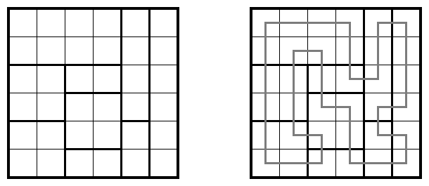
type: fillomino
puzzle: |
1.2
2.1
...
solution: |
122
231
233

type: fillomino-loop
puzzle: |
.2.4
2...
....
5...
solution:
grid: |
1224
2554
2524
5524
loop: |
o-o-o-o
|. . .|
o o-o o
|.|.|.|
o o o o
|.|.|.|
o-o o-o
code:
cell_rows_bottom: [1,2]
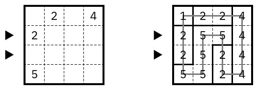
type: galaxies
puzzle: |
. . . . . .
o
. . . . . .
o o
. . . . . .
. . o . .o.
. . . . . .
o
. . . . . .
solution: |
aaaaa
bbcde
dddde
dddde
dfffe

type: geradeweg
puzzle: |
.....
.211.
..2..
3...4
.....
solution: |
o-o o-o-o
|.|.|. .|
o o o-o o
|.|. .|.|
o o-o-o o
|. . . .|
o-o-o-o o
. . .|.|
o o o o-o

type: greaterwall
puzzle:
rows: |
.<.
.<. .
. .
. . . .
. . . .
. .>.
.>. .
columns: |
.<.
. . .
. .
. . . .
. . . .
. .>.
.>. .
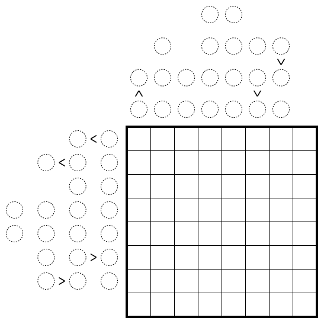
type: heyawake
puzzle:
rooms: |
aabcc
ddbee
ddffg
ddffg
hhffg
clues: |
.....
3....
....1
.....
.....
solution: |
...X.
.X...
X...X
.X...
...X.

type: illumination
puzzle:
left: ["1",-,-,"0"]
top: [-,"1",-,-]
right: [-,-,"1","1/2"]
bottom: ["2",-,"2",-]
solution: |
. . . . .
.-.-. o .
. o o . .
|
.-. . .-.
|
. . . . .

type: japanesesums
puzzle:
digits: 1-3
left: [[],[],[3,1],[3,3]]
top: [[],[1,2],[3],[3,3]]
solution: |
X1X2
XX21
3X1X
12X3
code:
cell_rows_bottom: [2,3]
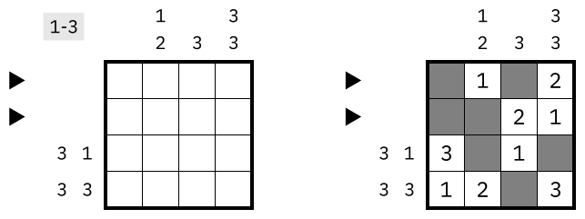
type: japanesesums
puzzle:
digits: 1-9
left:
- [34]
- [22,2]
- [7,6,4]
- [13,23]
- [12]
- [12,10]
- [24]
- [12,12,12]
top:
- [9,4,3]
- [23,9]
- [12,24]
- [8,8,8]
- [7,7,7]
- [5,5,5]
- [2,12,20]
- [9,9,9]
solution: |
XX857329
7843X2XX
25XX6X31
X67X1598
X138XXXX
435XX172
XX912453
39X75X84
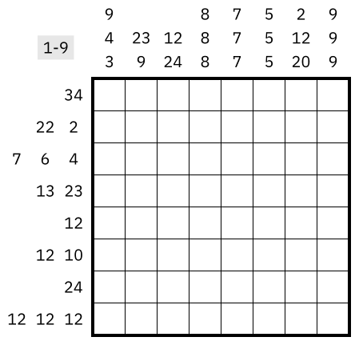
type: killersudoku
puzzle:
cages: |
ab.cc.
abd...
.dd..e
f....e
fg.h..
.g.hii
clues:
a: 7
b: 11
c: 8
d: 6
e: 11
f: 6
g: 7
h: 3
i: 10
grid: |
..2...
......
......
......
......
......
solution: |
462531
351642
623415
514326
146253
235164
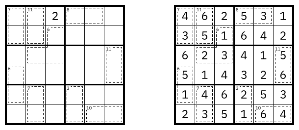
type: coral+lits
puzzle:
top:
- [1,1,1]
- []
- []
- []
- [1,1]
- []
left:
- [1,4]
- [1,3]
- [1,2]
- []
- [1]
- []
solution: |
iiii.l
.t.lll
tt.t..
.t.tt.
...t..
iiii..
code:
cell_rows_bottom: [1,4]
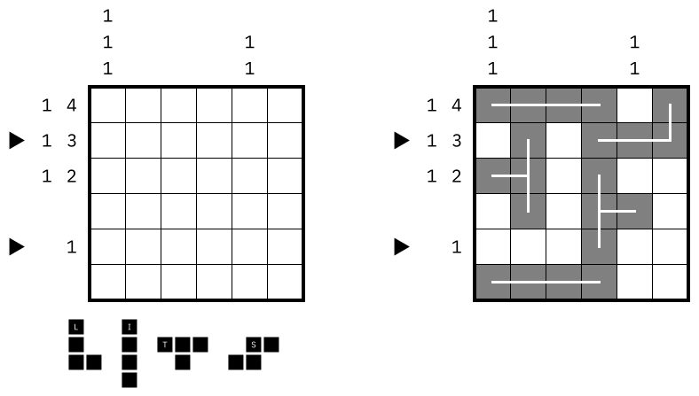
type: coral+litso
puzzle:
left:
- [3,3]
- []
- [1,1,2]
- []
- []
- []
- []
top:
- []
- [4]
- [1,1,2]
- []
- []
- []
- []
solution: |
XXXsXXX
iXssXlX
iXsXXlX
iXXXllX
illlooX
ooXlooX
ooXXXXX
code:
cell_rows_bottom: [1,4]
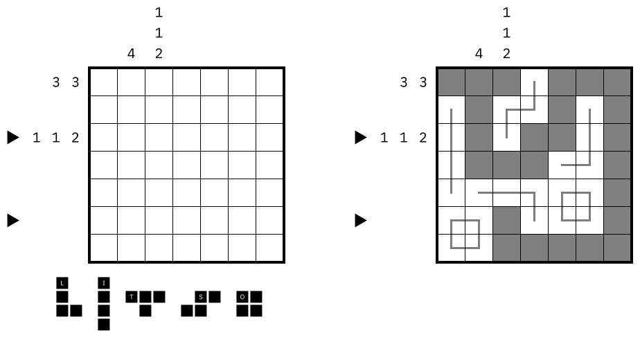
type: kropki
puzzle: |
+ + + + + +
.o.*.o. .
+ +o+*+o+ +
. .o.*.o.
+*+ + +o+o+
.o. . .o.
+ + + +o+o+
.o. .o.o.
+o+o+ +o+o+
.o. . .*.
+ + + + + +
solution: |
32451
13245
21534
54123
45312
code:
cell_rows_bottom: [1,3]

type: magiclabyrinth
puzzle:
digits: "1-3"
grid: |
o-o-o-o-o
|1 . . .|
o o-o-o o
|.|. . .|
o o o-o-o
|.|. . .|
o o-o-o o
|3 .|. 2|
o-o-o o-o
solution: |
132-
-231
21-3
3-12

type: latintapa
puzzle:
grid: |
.....a
b.....
...c..
..d...
......
......
clues:
a: [WOW]
b: [OR, DR]
c: [DW, WDRO]
d: [OW, WORD]
solution: |
DRO-W-
--DROW
ROW--D
O--WDR
WDRO--
-W-DRO
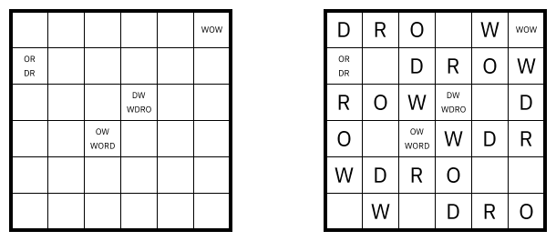
type: lits
puzzle: |
aaaaaa
abbbba
cbcbbd
cccddd
eeeeed
eeeedd
solution: |
...XXX
..XX.X
X..XXX
XXX..X
..XXXX
...X.X

type: litsplus
puzzle: |
aaabbb
accccb
dcdcce
dddffe
ggghff
ggghff
solution: |
......
.XXXX.
..X...
XXXXX.
.X..XX
XXX...

type: loopki
puzzle: |
oo*o*
.**.*
oo*oo
*.***
solution: |
o-o
|.|
o o-o-o
|. . .|
o o-o o o-o
|.|.|.|.|.|
o-o o o-o o
. .|. . .|
o o o-o-o-o
type: masyu
puzzle: |
.o.*..
....o.
*..o..
......
...o..
..o...
solution: |
o-o-o-o o-o
|. . .|.|.|
o-o-o o o o
. .|.|.|.|
o-o-o o o o
|. . .|.|.|
o o o-o o o
|. .|. .|.|
o-o o-o-o o
.|. . . .|
o o-o-o-o-o

# test that unknown type is ok when we have render-as
type: masyu+notouch
render-as: masyu
puzzle: |
..........
....o...*.
.o*.......
.....o*...
.o........
.o..*....*
...o...o..
o.......o.
.o..o..o..
..........
code:
cell_rows_bottom: [2,5]

type: maximallengths
puzzle:
left: 2.1...
top: .3.1..
solution: |
o-o-o o-o-o
|. .|.|. .|
o o-o o-o o
|.|. . .|.|
o o o-o o o
|.|.|.|.|.|
o o o o-o o
|.|.|. . .|
o o-o o-o o
|. . .|.|.|
o-o-o-o o-o

type: meanderingnumbers
source: http://maybepuzzles.wordpress.com/2014/03/26/puzzle-19-count-numbers/
puzzle:
regions: |
aaabbb
aaacbb
addccc
ddeccf
ddeeff
ddeeff
clues: .
solution: |
347541
256132
178256
565341
414152
323243

type: persistenceofmemory
puzzle: |
A..B.o.
CCCBBAA
AA...A.
A..BBC.
...B.C.
.AAA...
o....AA
solution: |2
o-o-o . . o .
| | |
o . o-o . o .
| | |
o o o
| | |
o o o-o
| | |
o-o o o
| | |
o o-o o
| | |
o-o o-o-o
type: mines
puzzle: |
23.2.
.....
3..1.
..1..
0..2.
solution: |
..X.X
XX...
.X...
....X
X...X
code:
cell_rows_bottom: [1,3]
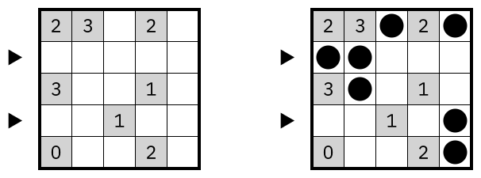
type: nanro-signpost
puzzle:
rooms: |
pptwyyyyuu
pptwwypppu
ptttwwppuu
uuxnnnzzpp
uxxxynnzpp
uuxyyyyzzp
iiiiijjjjj
vkkkkkppuu
vyyyyzpppu
vvvyzzzzuu
clues: |
3.333...3.
..........
..........
2..1..1.2.
....4.....
..........
4....2....
41....1.1.
.1...3....
..........
type: neighbors
puzzle:
shading: |
..XX....X
X..XX...X
.X..X....
.XXX.XXX.
...X.X..X
XX.X.X..X
....XXXXX
...X.X...
X......XX
clues: |
.........
.........
.........
.........
...1.2...
.........
.........
.........
.........
type: numberlink
puzzle: |
..12
.2..
.3.3
..1.
solution: |
1112
1222
1333
111.
code:
cell_rows_bottom: [0, 2]
value: "1222,111-"
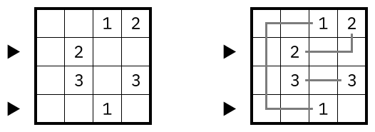
type: nurikabe
puzzle: |
..3..
...2.
.....
.1...
..3..
solution: |
x-3xx
x-x2x
xxx-x
x1xxx
xx3--

type: pentominous-borders
puzzle: |
o o o o o o o o o o o
o o o-o o-o-o-o-o o o
|
o o-o o-o o o-o o o o
| | | |
o o o o o-o-o o o o o
| | | |
o o o-o o o o-o o o o
| |
o o-o o o-o-o o o o o
| | | |
o o o-o o o o o o o o
| | |
o o o o o-o-o o-o-o o
| | | |
o o o o-o o o o o o o
| | |
o o-o-o o-o o-o-o-o o
o o o o o o o o o o o
solution: |
pppiiiiiuu
ppuuullllu
ffuyulwnuu
iffyywwnll
ifnywwznnl
innyzzzynl
intwzyyyyl
intwwnnvvv
ltttwwnnnv
lllliiiiiv

type: pentominous
puzzle: |
.........
.........
.P.....P.
.F.....L.
..V...Y..
..L...F..
...V.V...
....V....
.........
.........
solution: |
pyyyynnnp
ppfynnypp
ppffxyypp
iffxxxyll
ivvvxfyvl
illvfffvl
ilnvfvvvl
ilnnvppuu
ulunvpppu
uuunvvvuu
type: pentopia
puzzle:
grid: |
..........
..........
..aa...b..
.......b..
..........
..........
..f.......
..e...dc..
..........
..........
clues:
a: dr
b: dl
c: urd
d: l
e: rd
f: lu

type: pentomino-sums
puzzle:
digits:
"1-4"
top:
- [X,X,I]
- [I]
- [T,U,V]
- [X]
- [I,X,X]
left:
- [X,X,I]
- [V]
- [T,U,V]
- [W]
- [I,X,X]
solution:
top:
- [4,X,6]
- [6]
- [2,1,3]
- [4]
- [6,X,4]
left:
- [4,X,6]
- [3]
- [2,1,3]
- [7]
- [6,X,4]
grid: |
4X231
XXX12
2X1X3
34XXX
123X4
values:
X: 4
I: 6
T: 2
U: 1
V: 3
W: 7
code:
cell_rows_bottom: [0,2]
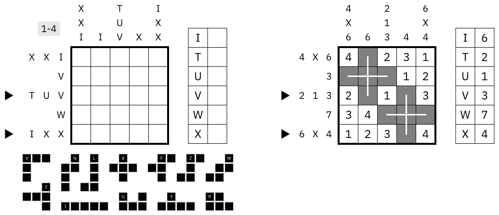
type: pyramid
source:
puzzle: |
G .
W . .
W . 7 3
G . 1 . .
G 1 . . . 3
solution: |4
8
4 4
3 7 3
4 1 8 5
1 5 6 2 3
type: rowkropkipyramid
puzzle: |
G 3
G . .
G . . .
W .o. . .
G 1*.*.o.*6
solution: |4
3
8 5
1 9 4
3 2 7 3
1 2 4 3 6
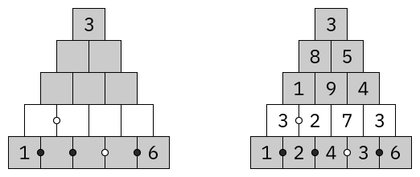
# test that render-as overrides the type
type: lits-symmetry
render-as: lits
puzzle: |
aabbbc
aacbbc
dacccc
dddddd
eddede
eeeeee
eeeeff
ggffff
ggggff
giighh
iiihhh
type: ringring
puzzle: |
X...X
....X
....X
.X...
.....
solution: |2
.-.-.
| |
.-.-. .
| | | |
. .-.-.
| |
. . .-.
| | | |
.-.-. .-.
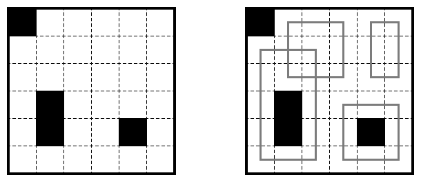
type: scrabble
puzzle:
grid: |
....*.
..*...
......
*.....
......
..**..
......
......
words:
[NUT, ENDS, NEST, STEP, STONE, SPORTS]
solution: |
....N.
..STEP
..T.S.
SPORTS
..N...
..ENDS
...U..
...T..

type: shakashaka
puzzle: |
.....
X...1
.3...
.....
....X
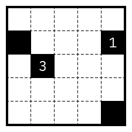
type: shikaku
puzzle: |
.4.2
....
.22.
.3.3
solution: |
aabb
aacd
eecd
fffd
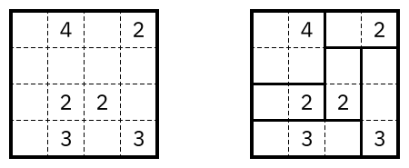
type: skyscrapers-tightfit
puzzle: |2
--2
3/\.-
-\.\4
-.\/-
35-
solution: |
2/1 4\5 3
4\5 3 2\1
3 1\2 5/4
type: skyscrapers-doppelstern
puzzle:
stars: 1
top: [1,-,-,-,-]
right: [-,3,-,-,-]
left: [4,-,4,-,-]
bottom: [3,-,-,-,-]
solution: |
*1234
43*12
1234*
3*421
241*3
code:
cell_rows_bottom: [0,3]
type: skyscrapers
puzzle:
digits: 1-4
top: [3,-,-,-]
left: [-,-,2,-]
right: [2,1,-,4]
bottom: [-,-,2,-]
solution: |
2413
1234
3142
4321
code:
cell_rows_bottom: [1,2]

type: skyscrapers-fractional
puzzle: |2
-1-
2/..1
-./.3
-../-
--3
solution: |2
3/1 2 4
2 4/3 1
4 1 2/3
code:
cell_rows_bottom: [0,1]
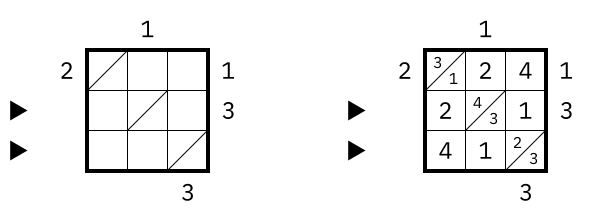
type: skyscrapers
puzzle:
digits: 1-4
top: [3,-,-,-]
left: [-,-,2,-]
right: [2,1,-,4]
bottom: [-,-,2,-]
grid: |
.4..
...4
3...
..2.
solution: |
2413
1234
3142
4321
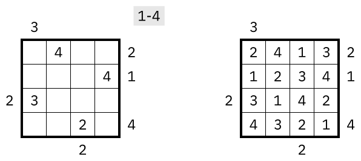
type: slalom
puzzle: |
01.2..
.3..4.
......
0..1.2
.3..4.
......
solution: |
///\/
/\//\
\\/\\
//\\/
/\\/\

type: slitherlink
puzzle: |
0..2.1
.32.3.
3....2
3....3
.2.32.
1.1..1
solution: |
o o o o-o-o o
. . .|. .|.
o o-o o o-o o
.|.|.|.|. .
o-o o o o-o o
|. .|.|. .|.
o-o o-o o o-o
.|. . . . .|
o-o o-o-o o-o
|. .|. .|.|.
o-o-o o-o o o
. . .|. .|.
o o o o-o-o o

type: slitherlinkliar
puzzle: |
1..0.3
.03222
0....1
3....3
32202.
3.3..3
solution:
loop: |
o o-o-o-o o-o
.|. . .|.|.|
o o o-o-o o o
.|.|. . .|.|
o o o-o-o-o o
.|. . . . .|
o-o o o-o-o o
|. . .|. .|.|
o-o o-o o o o
.|.|. . .|.|
o-o o o o o o
|. .|. . .|.|
o-o-o o o o-o
liars: |
...X..
.X....
X.....
.....X
....X.
..X...
type: slovaksums
puzzle:
digits: 1-4
grid: |
a....
...b.
.....
.....
..c..
clues:
a: 7 2
b: 13 4
c: 5 3
solution: |
.4231
314.2
1234.
4.123
23.14

type: snake
puzzle:
clues:
top: [1,5,-,-,-,-]
left: [3,-,-,3,-,-]
grid: |
......
*....*
......
......
......
......
solution: |
...XXX
*X.X.*
.X.X..
.X.XX.
.X..X.
.XXXX.
code:
cell_rows_bottom: [0,4]

type: slitherlink
puzzle: |
0..2.1
.32.3.
3....2
3....3
.2.32.
1.1..1
solution: |
o o o o-o-o o
. . .|. .|.
o o-o o o-o o
.|.|.|.|. .
o-o o o o-o o
|. .|.|. .|.
o-o o-o o o-o
.|. . . . .|
o-o o-o-o o-o
|. .|. .|.|.
o-o-o o-o o o
. . .|. .|.
o o o o-o-o o
code:
cell_rows_bottom: [0]
cell_rows_bottom_labeled:
Z: 2
node_rows_bottom: [4]
cell_cols: [1]
node_cols_labeled:
X: 4
node_labels: |
.A.....
.....B.
.......
.C..D..
.......
.......
.......
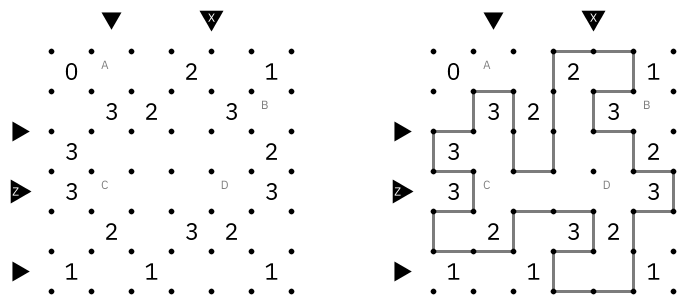
type: slitherlink
puzzle: |
0..2.1
.32.3.
3....2
3....3
.2.32.
1.1..1
solution: |
o o o o-o-o o
. . .|. .|.
o o-o o o-o o
.|.|.|.|. .
o-o o o o-o o
|. .|.|. .|.
o-o o-o o o-o
.|. . . . .|
o-o o-o-o o-o
|. .|. .|.|.
o-o-o o-o o o
. . .|. .|.
o o o o-o-o o
code:
cell_rows_bottom: [0,2]

type: starbattle
puzzle:
stars: 2
grid: |
laaaiasbb
lllaiassb
aaaaiaasb
jjaaiabbb
ajaaaabbt
ajannabtt
aaabnnbct
aacbbbbcc
acccccccc
solution: |
....*.*..
*.*......
....*..*.
*.*......
......*.*
.*.*.....
.....*..*
.*.*.....
.....*.*.

type: statuepark
puzzle:
grid: |
..*..o..
.*.*..o.
o.*..*.*
......o.
.*......
*.o..o.*
.*..*.*.
..o..o..
shapes: [I,L,L,U,X]
solution: |
..X.....
.XXX.X.X
..X..X.X
.....X.X
XX..XX.X
X..X...X
XX.XXXX.
........
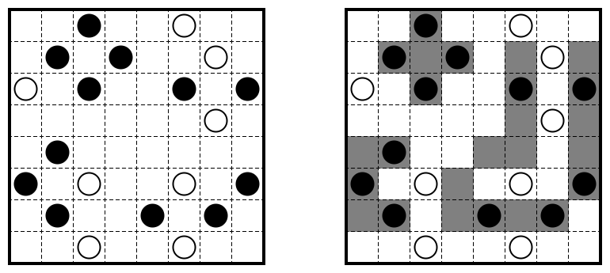
type: sudoku-doppelblock
author: silke
puzzle:
grid: |
aaabc
daabc
ddbbc
ddbec
eeeec
outside:
top: [2,3,-,-,-]
left: [-,2,6,4,-]
solution: |
31XX2
1X2X3
X312X
2X31X
X2X31
code:
cell_rows_bottom: [0,4]
type: sudoku
puzzle: |
..14..
.2..3.
3....2
5....1
.5..6.
..65..
solution: |
631425
425136
314652
562341
153264
246513

type: thermosudoku
puzzle: |
.b..2.
a.c5.1
.d..6.
.4..c.
5.3b.d
.2..a.
solution: |
135624
264531
351462
642153
513246
426315

type: summon
puzzle:
digits: 1,2,3
grid: |
aaaa
bcca
bcca
bbbb
outside:
bottom: [-,-,23,-]
right: [5,2,32,-]
solution: |
3.2.
.1.1
.32.
2.13
code:
cell_rows_bottom: [0,2]
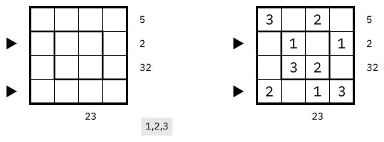
type: tapa-cave
puzzle:
grid: |
.b..c.
....b.
..ab..
......
d....c
.....d
clues:
a: [3,3]
b: [3]
c: [4]
d: [2]
solution: |
X....X
XX.XXX
.X.X..
.X.XXX
XX..X.
.XXXX.
code:
cell_rows_bottom: [0,4]

type: tapa
puzzle:
grid: |
......
.a..b.
......
......
..c...
......
.....d
clues:
a: [3, 3]
b: [1, 2, 2]
c: [1, 1, 1, 1]
d: [1]
solution: |
X-XXX-
XaX-bX
X-XX-X
XX-XXX
X-c-X-
XX-XX-
-XXX-d
type: tents
puzzle:
clues:
top: [1,-,0,-,-]
left: [-,-,-,-,-]
grid: |
.....
.*...
*....
...*.
..*..
solution: |
.D...
.*...
*..D.
U..*.
..*L.
code:
cell_rows_bottom: [1,3]
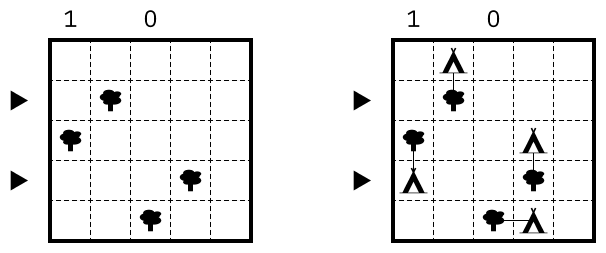
type: tomtom
puzzle:
rooms: |
aaaxdef
bbxxxef
cxxzxxf
xxzzzxx
gxxzxxj
ghxxxkk
ghixlll
clues:
grid: |
a...def
b......
c..z...
.......
g.....j
.h...k.
..i.l..
clues:
a: "9"
b: "10"
c: "4"
d: "7"
e: "8"
f: "8"
g: "18"
h: "18"
i: "2"
j: "5"
k: "12"
l: "18"
z: "360"

type: turning-fences
puzzle: |
3...
4..2
...1
33.3
solution: |
. .-.-. .
| |
.-. . .-.
| |
.-. . . .
| |
.-. .-. .
| | | |
.-.-. .-.
code:
cell_rows_bottom: [0,2]
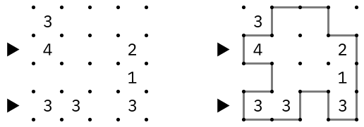
type: twilight-tapa
puzzle:
grid: |
a...e
.gf..
b..d.
.....
...c.
clues:
a: [3]
b: [2, 2]
c: [1, 1]
d: [1, 1, 3]
e: [2]
f: [6]
g: [1, 4]
solution: |
-XXX-
XX-X-
---XX
XX-X-
-XXXX
code:
cell_rows_bottom: [0,3]

type: wordloop
puzzle:
grid: |
....
...E
N...
....
words: [AN, AUNT, TINT, WET, WIN]
solution: |
AN.T
U.IE
NN.W
T...
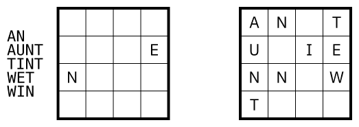
type: wordsearch
puzzle:
grid: |
TTEM
M..T
E..A
ATEE
words: [AIM, EAT, IN, MAN, TIME]
solution:
grid: |
TTEM
MIAT
ENMA
ATEE
words:
- 2 2 0 2
- 3 0 3 2
- 1 2 1 1
- 3 3 1 1
- 0 3 3 0
type: yajilin
puzzle:
grid: |
.........
....a.b..
...c...d.
.........
.........
.........
.e...f...
..g.h....
.........
clues:
a: 1 right
b: 1 down
c: 2 down
d: 2 down
e: 0 right
f: 2 up
g: 3 up
h: 2 left
solution: |
o-o X o-o-o-o-o X
|.|. .|. . . .|
o o-o-o o X o o-o
|. . . . . . . .|
o-o X o o-o X o o
.|. . .|.|. . .|
X o-o-o o o-o X o
. . .|.|. .|. .|
o-o X o-o X o-o o
|.|. . . . . .|.|
o o-o X o-o-o o o
|. .|. .|. .|.|.|
o o o-o-o o o-o o
|. . . . . . . .|
o X o X o o-o X o
|. . . . .|.|. .|
o-o-o-o-o-o o-o-o
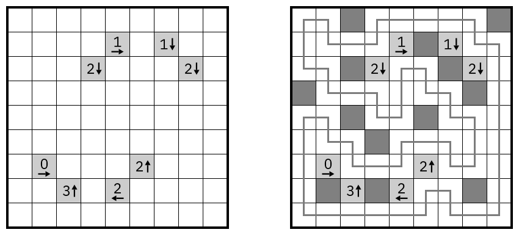
type: yajilin
puzzle:
grid: |
a...
....
..b.
....
clues:
a: 1 right
b: 1 left
solution: |
o o-o X
| |
o-o o-o
| |
o X o o
| |
o-o-o-o

- type: edges
grid: |
o o o o o o o
.|. . .|.|.
o o-o-o o-o-o
. . .|. .|.
o-o o o-o o-o
.|. . .|. .
o-o-o o o o o
.|.|. .|. .
o o-o-o o-o-o
. .|.|. . .
o-o o-o-o o o
.|. .|.|. .
o o o o o o o
substitute:
"|": afternoon-west
"-": afternoon-south
- type: grid
style: default
grid: |
......
......
......
......
......
......
- type: cells
tag: solution
grid: |
423651
145362
214536
651423
362145
536214
# box of 2 or 3
- type: full
grid: |
*-*-*-*-*
| | | | |
*-*-*-*-*
| | |
*-o-o-o-*
| | |
*-*-*-*-*
| | | | |
o-*-*-*-*
substitute:
'|': thin-edge-vert
'-': thin-edge-horiz
'*': small-pearl-black
'o': small-pearl-white
# solution:
# 22332
# 33232
# 3-2-3
# 22323
# -3323

- type: grid
style: dashed
grid: |2
...
...
...
- type: edges
grid: |
. . . . . .
o-o-o o-o
| |
o o-o o o
| |
o o-o-o o
. . . . . .
substitute:
'-': sol-edge-horiz
'|': sol-edge-vert
'o': .
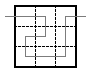
- type: grid
style: default
grid: |
......
......
......
......
......
......
- type: regions
grid: |
aaabbb
aaabbb
cccddd
cccddd
eeefff
eeefff
- type: edges
grid: |
. . . . . . .
o o o o
.o.o.o. . . .
o o o
. . . . . . .
o o o
. . . .o.o.o.
o o o
.o.o.o. . .o.
o o o
. . . . . . .
o o
. . . . . . .
- type: cells
grid: |
1.....
.2....
..3...
...4..
....5.
.....6
- type: cells
tag: code
place: west
grid: |
.
>
.
.
>
.
substitute:
'>': triangle-right
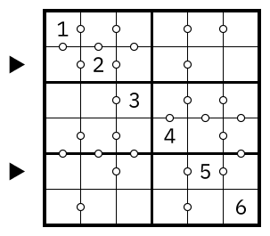
# horse snake
- type: grid
style: dashed
grid: |
........
........
........
........
........
........
........
........
- type: cells
grid: |
........
........
........
...55...
...76...
........
........
o......o
substitute:
o: pearl-black
- type: edges
tag: solution
grid: |
. . . . . . . . .
. . . o-o-o . .
| |
. . o-o . o . .
| |
. o-o . . o-o .
| |
. o . . . . o .
| |
. o-o . o-o-o .
| |
. . o . o . . .
| |
o-o-o . o-o-o-o
. . . . . . . . .
substitute:
o: .
'-': sol-edge-horiz
'|': sol-edge-vert
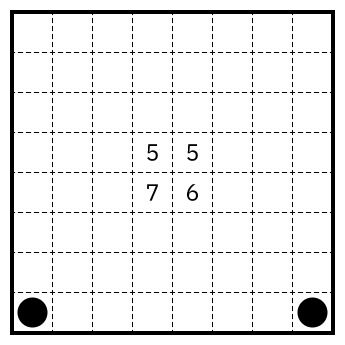
- type: cells
grid: |
ABCDEFGHIJKL
MNOPQRSTUVWX
YZ0123456789
.-|*o#/\....
- type: cells
grid: |
abcdefghijkl
mnopqrstuvwx
yzABCDEFGHIJ
KLMNOPQRSTUV
WXYZ........
.
.
.
.
.
substitute:
a: 123
b: kropki-white
c: kropki-black
d: afternoon-west
e: afternoon-south
f: light-diagonal-forward
g: light-diagonal-back
h: light-diagonal-both
i: dot
j: shade
k: small-pearl-white
l: small-pearl-black
m: pearl-white
n: pearl-black
o: edge-horiz
p: edge-vert
q: thin-edge-horiz
r: thin-edge-vert
s: sol-edge-horiz
t: sol-edge-vert
u: light-diagonal-forward
v: light-diagonal-back
w: light-diagonal-both
x: arrow-right R
y: arrow-left L
z: arrow-up U
A: arrow-down D
B: triangle-topleft
C: triangle-topright
D: triangle-bottomleft
E: triangle-bottomright
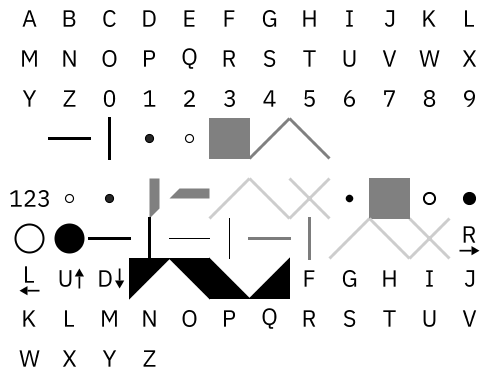
- type: cells
tag: solution
grid: |
XXXXXX
-X-X-X
-X--XX
-XXXX-
---X--
--XX--
--X---
-XXXX-
XX--X-
X-X-X-
XXXXXX
substitute:
"-": blank
"X": shade
- type: grid
style: default
grid: |
......
......
......
......
......
......
......
......
......
......
......
- type: regions
grid: |
aabbbc
aacbbc
dacccc
dddddd
eddede
eeeeee
eeeeff
ggffff
ggggff
giighh
iiihhh
- type: edges
grid: |
. . . . . . .
. . . . . . .
. . . . . . .
. . . . . . .
. . . . . . .
. . . . . . .
O
. . . . . . .
. . . . . . .
. . . . . . .
. . . . . . .
. . . . . . .
. . . . . . .
substitute:
O: dot
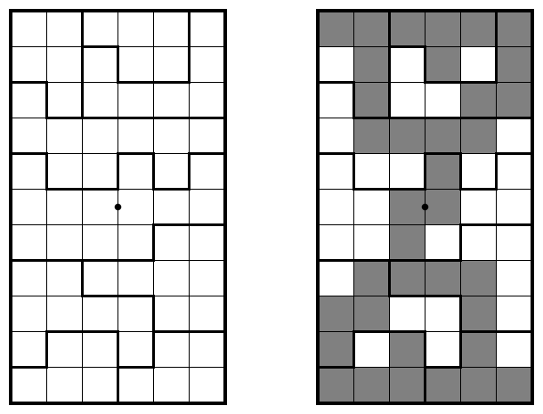
# pentomino-pipes
- type: nodes
tag: puzzle
grid: |
..F..
.....
.Y.V.
.....
..V..
substitute:
'.': small-dot
- type: full
tag: solution
grid: |2
. . .-*-.
| |
. *-. . .
| | |
. .-* *-.
| |
. . . . .
| |
. *-.-. .
substitute:
'*': kropki-black
'.': small-dot
- type: cells
grid: |2
//.
// //
/ /
./ /\
./.
substitute:
'/': light-diagonal-forward
'\': light-diagonal-back
- type: grid
style: default-irregular
grid: |2
...
.. ..
. .
.. ..
...
- type: cells
tag: solution
grid: |2
124
11 32
2 3
43 12
434
- type: grid
style: plain
shape: shifted
grid: |
.
..
...
....
.....
- type: cells
shape: shifted
grid: |
5
43
210
9ABC
666.6

- type: cells
grid: |
X...X
....X
....X
.X...
.....
substitute:
X: black
- type: edges
tag: solution
grid: |
o
.-.-.
o | |
.-.-. .
o| | | |
. .-.-.
o| |
. . .-.
o| | | |
.-.-. .-.
o
substitute:
'-': sol-edge-horiz
'|': sol-edge-vert
- type: grid
style: dashed
grid: |
.....
.....
.....
.....
.....
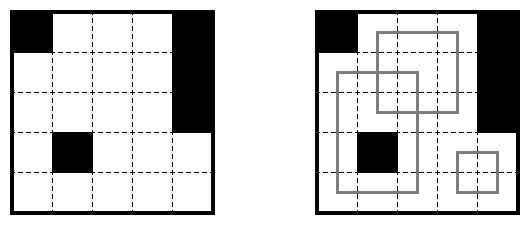
- type: cells
grid: |
.....
X...X
.X...
.....
....X
substitute:
X: black
- type: cells
grid: |
.....
....1
.3...
.....
.....
substitute:
1: inverted-letters 1
3: inverted-letters 3
- type: cells
tag: solution
grid: |
.ab..
.d.b.
..dc.
abab.
dcdc.
substitute:
a: triangle-topleft
b: triangle-topright
c: triangle-bottomright
d: triangle-bottomleft
- type: grid
style: dashed
grid: |
.....
.....
.....
.....
.....
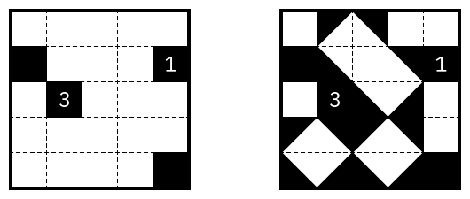
- type: cells
grid: |
3.2.20
..4...
2..1..
12....
...3.1
11..1.
- type: note
place: top-right
contents:
- 3
- miniloop
- type: edges
tag: solution
grid: |
o-o-o-o-o o o
|. . . .|. .
o-o o-o o-o o
.|.|.|. .|.
o-o o-o o o-o
|. . . . . .|
o o o-o-o-o o
|. .|. . .|.|
o o-o o-o o-o
|.|. .|.|. .
o-o o-o o o o
. .|. .|. .
o o o-o-o o o
substitute:
'|': sol-edge-vert
'-': sol-edge-horiz
- type: grid
style: dots
grid: |
......
......
......
......
......
......
- type: cells
tag: code
place: west
grid: |
.
>
>
.
.
.

- type: cells
grid: |
B...
O...
substitute:
O: pearl-black
B: tree
- type: cells
tag: solution
grid: |
.Z.#
####
substitute:
Z: tent
- type: cells
tag: solution
grid: |
...O
O...
substitute:
O: pearl-black
- type: edges
tag: solution
grid: |
o o o o o
-
o o o o o
o o o o o
substitute:
o: .
- type: grid
style: default
grid: |
....
....
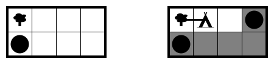
# starwars
# star battle with diagonals (also two stars each)
- type: grid
style: default
grid: |
.........
.........
.........
.........
.........
.........
.........
.........
.........
- type: nodes
grid: |
..........
..........
......../.
.......//.
......//..
.....//...
....//../.
......./..
....../...
..........
- type: regions
grid: |
aaabbbccc
aaabbbccc
aaabbbccc
bbbcccaaa
bbbcccaaa
bbbcccaaa
aaabbbccc
aaabbbccc
aaabbbccc
- type: cells
grid: |
......
..XXX.
..XXX.
......
.XXX..
.XXX..
substitute:
X: light-shade
- type: grid
style: default
grid: |
......
......
......
......
......
......
- type: regions
grid: |
aaabbb
aaabbb
cccddd
cccddd
eeefff
eeefff
- type: cells
grid: |
1.....
.2....
..3...
...4..
....5.
.....6
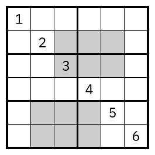
# wormhole (Logic Masters 201?)
- type: grid
style: dashed
grid: |
........
........
........
........
........
........
........
........
- type: cells
grid: |
........
.a....B.
......b.
..cA..C.
.B..Ad..
.C......
.e....f.
........
substitute:
a: 18
b: 52
c: 37
d: 25
e: 31
f: 9
# extra information: arrow up, 0
# (so start and end point have to be in the same row)
- type: note
place: top-right
contents:
[arrow-up 0]
- type: cells
tag: solution
grid: |
...X
....
.X..
....
substitute:
X: shade
- type: cells
grid: |
X...
....
..X.
....
substitute:
X: light-shade
- type: cells
grid: |
a...
....
..b.
....
substitute:
a: arrow-right 1
b: arrow-left 1
- type: grid
style: default
grid: |
....
....
....
....
- type: edges
tag: solution
grid: |
. . . . .
o o-o o
. .|.|. .
o-o o-o
.|. . .|.
o o o o
.|. . .|.
o-o-o-o
. . . . .
substitute:
'|': sol-edge-vert
'-': sol-edge-horiz

- type: grid
style: dashed
grid: |
...
...
...
- type: cells
grid: |
o*o
...
...
substitute:
o: pearl-black
'*': pearl-white
- type: cells
tag: solution
grid: |
o*o
o*o
ooo
substitute:
o: pearl-black
'*': pearl-white
- type: edges
tag: solution
grid: |
o o o o
| |
o o o o
| |
o o-o o
o o o o
substitute:
'|': edge-vert
'-': edge-horiz
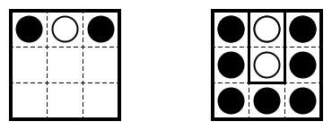